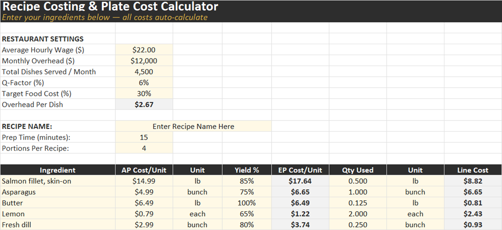
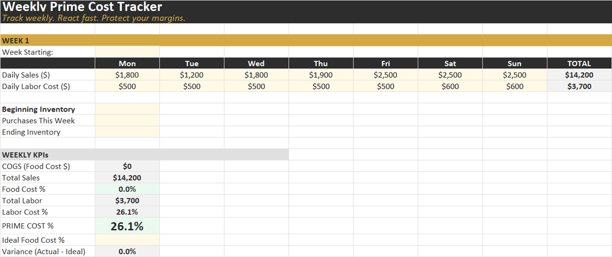
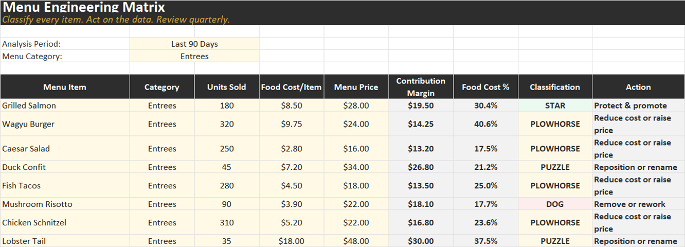
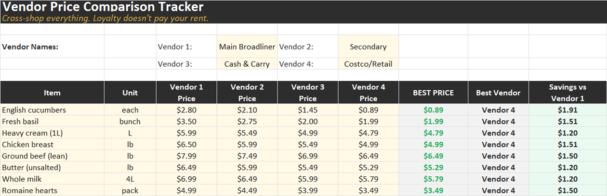
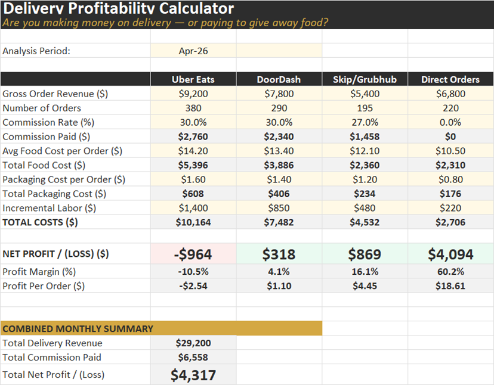
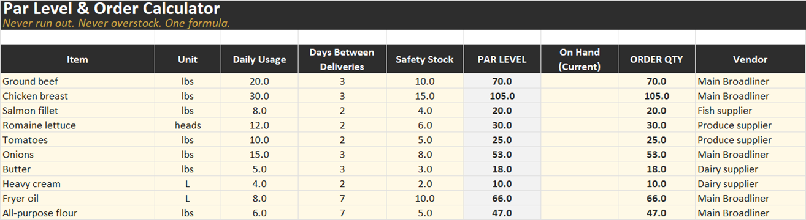
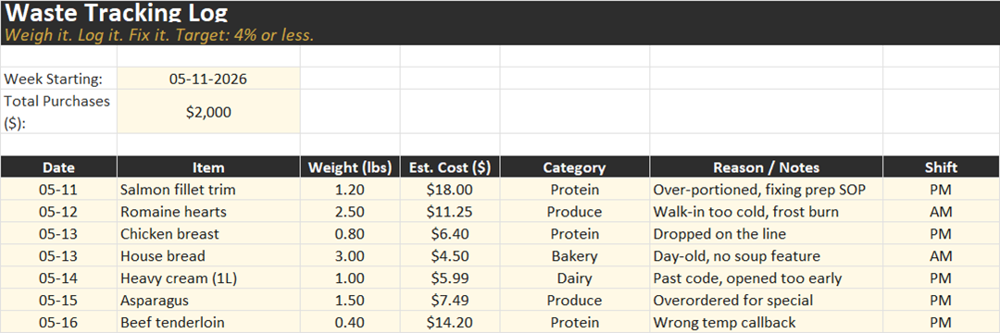
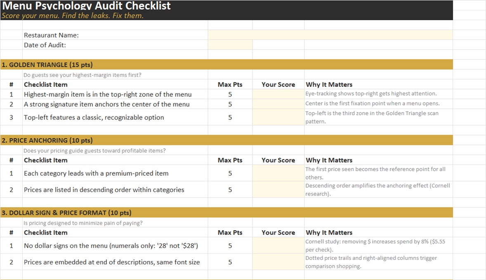

Click anywhere or press Esc to close
Eight practical Excel tools to track food cost, labor, waste, delivery, vendor pricing, menu profitability, and par levels — without building anything from scratch.
Most restaurant operators can feel when something is off. The dining room is full. The kitchen is running hard. Staff are tired. Orders are moving. But when the bills land, the profit is thinner than it should be.
The problem is not always one big mistake. It is usually a pile of small leaks.
Food cost creeps up by a few points. Labor gets scheduled by habit instead of numbers. A vendor raises prices quietly. A delivery platform takes its cut before you see the real margin. Waste gets thrown out, but not measured. A popular menu item looks like a winner until you actually cost it.
That is how restaurants lose money while looking busy.
The Restaurant Profit Leak Toolkit is a practical Excel-based operating system for independent restaurants, food trucks, cafes, and chef-led businesses.
It is not accounting software. It is not a complicated restaurant management platform. It is the set of tools you should have had before you opened the doors: recipe costing, prime cost tracking, waste logging, par ordering, vendor comparison, delivery profitability, and menu engineering.
Built by a chef for operators who need answers fast.

Know what a dish really costs before you price it. Includes yield loss, labor, overhead, Q-factor, and target food cost so menu prices come from reality, not guesswork.

Track food cost and labor cost every week, not after the month is dead. Sales, COGS, labor %, prime cost %, and trends — before the problem becomes permanent.

Sort menu items into Stars, Plowhorses, Puzzles, and Dogs. Stop arguing about the menu from opinion. Decide from contribution margin and popularity.

Compare prices across four vendors and see where loyalty is costing you money. Tracks the cheapest source, savings per unit, and weekly savings potential.

Find out if delivery is actually profitable after commission, food cost, packaging, and labor. If delivery is costing you money, this will show it.

Order what you need without overstocking or running out. Par levels from daily usage, delivery frequency, and safety stock. Order quantities auto-calculate.

Stop guessing waste. Track what gets thrown away, why it happened, what shift it happened on, and what it cost. The waste you do not measure becomes normal.

Score your menu against practical menu psychology principles so guests notice the right items, understand the offer faster, and buy more profitably.
These tools are built around the numbers that matter inside a real food business. Not vanity metrics. Not generic budget templates. Not a dashboard that looks impressive but does not change what you do on Monday morning.
This toolkit focuses on the decisions that actually protect margin:
That is the difference between having spreadsheets and having an operating tool.
Christian Schiffner is a German Küchenmeister — Master Chef — with two decades across Germany, Switzerland, Austria, Spain, and Canada. Now running The Grumpy Chef from Dawson City, Yukon. He has worked the line, run the books, and rebuilt P&L from the floor up. These are the same calculators he uses with operators today. Not theory. Not borrowed from a textbook. Built from the scars.
If one vendor item is overpriced, one menu item is underpriced, one delivery platform is unprofitable, or one waste habit keeps repeating — CAD 47 is not the problem.
The problem is not knowing.
A consultant charges $3,500 a month to find these leaks for you. The toolkit hands you the same calculators for $47, once. Use them as many times as you want.
7-day guarantee. Use the toolkit to cost one recipe, check one week of prime cost, or compare 10 vendor items. If you do not find at least one useful insight, email me within 7 days and I will refund you.
No. The toolkit is built around simple input cells and auto-calculations. You enter your numbers. The sheets do the math.
No. This is an operating toolkit, not accounting advice. Your accountant tells you what happened. These tools help you manage what is happening while you can still fix it.
It is built for restaurants, but it also works for food trucks, cafes, catering operations, ghost kitchens, pop-ups, and small hospitality businesses.
The toolkit is built as Excel workbooks. Some files may open in Google Sheets, but Excel is the recommended format for best results.
You can start the same day. The fastest first step is to cost one recipe, run one weekly prime cost check, or compare 10 common vendor items.
No. Every calculator is built around numbers a working kitchen actually generates — yield loss, Q-factor, par levels by usage pattern, vendor switching savings, real prime cost weighted by sales mix. AI templates skip the parts that matter because the model has never had a cook walk out mid-service or a delivery platform quietly take 32%. These came from running the line.
That is the next step up — a structured 3-day diagnostic process built around these tools. See the $197 starter kit if you want the guided walkthrough instead of just the spreadsheets.
If $47 is too much today, that is fair. Drop your email and I will send you 64°N Weekly — one practical system per week, written from Dawson City. No fluff. No upsells. Unsubscribe in one click.
The 72-Hour Profit Sprint is the same 8 calculators wrapped in a 3-day diagnostic protocol — daily audio walkthroughs, structured worksheets, and a Find-a-Leak Guarantee. For operators who want to be told exactly what to do on Day 1, Day 2, Day 3. Same tools. Guided. $197 CAD.
See the $197 Sprint →You do not need another lecture about margins. You need the tools to see them. Get the Restaurant Profit Leak Toolkit, enter your numbers, and find the leaks hiding in your food cost, labor, vendors, delivery, waste, inventory, and menu.
Get the Toolkit — $47 CAD